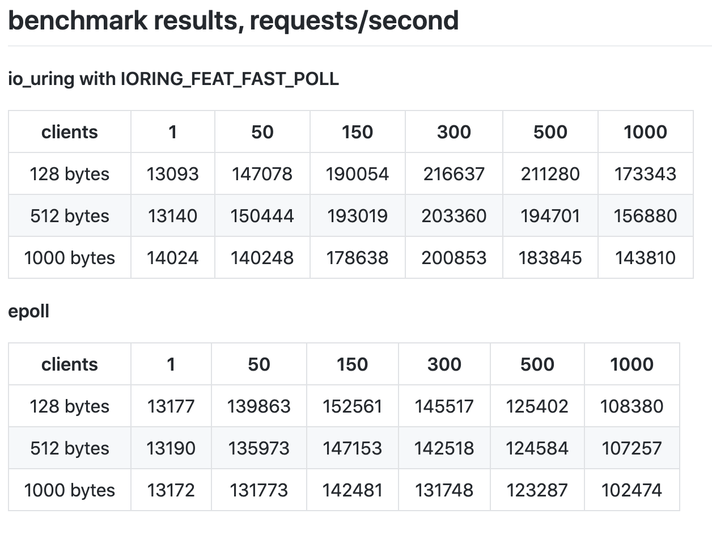

之前在 Facebook 上面分享不少技術文章的心得，被網友建議說可以放在 blog 上面，其實原本想在 blog 上面放一些比較長且整理過的東西，不過想想如果自己的心得能讓更多人看見，並且有機會交流也是不錯的事情，接下來應該會慢慢將之前的筆記謄過來。
https://www.facebook.com/kkcliu/posts/10157179358206129
io_uring
前陣子在寫 epoll 文章的時候，剛好看到了一個討論串裡面談到 io_uring，其實原本沒聽過這個是什麼，後來查了一下才知道是新版的 Linux kernel 5.1 會加入這個 io_uring，主要目的是可以很好的改善原本 Linux native AIO 的問題，其實一般來說 AIO 的效能應該會比 epoll 還好，簡單一點的比較可以看 stackoverflow 上面寫的，https://stackoverflow.com/questions/5844955/whats-the-difference-between-event-driven-and-asynchronous-between-epoll-and-a
- epoll is a blocking operation (epoll_wait()) - you block the thread until some event happens and then you dispatch the event to different procedures/functions/branches in your code.
- In AIO, you pass the address of your callback function (completion routine) to the system and the system calls your function when something happens.
簡單來說 epoll 是等待 event 發生，才去做事情，所以 epoll_wait 是個 blocking 的 operation，而 AIO 是把對應的 callback function 交給系統去做，算是真正的 asynchronous， Mysql 的 innodb 也是使用了 native linux AIO，但是看了下原生的 Linux AIO 有蠻多大大小小的問題，所以並不是真的太流行，這邊可以推薦大家看一下 cloudflare 這篇 https://blog.cloudflare.com/io_submit-the-epoll-alternative-youve-never-heard-about/ ， 有介紹怎麼使用 AIO，也提到 AIO 的一些問題，有趣的地方像是提到 Linus 對 AIO 的評價:
AIO is a horrible ad-hoc design, with the main excuse being “other, less gifted people, made that design, and we are implementing it for compatibility because database people - who seldom have any shred of taste - actually use it”. But AIO was always really really ugly.
接著是又看到 Facebook 分享的 slides: https://www.slideshare.net/ennael/kernel-recipes-2019-faster-io-through-iouring 和 Hackernews https://news.ycombinator.com/item?id=19843464 上面的介紹，最重要的是 performance 真的好上不少，從這邊 https://github.com/frevib/io_uring-echo-server/blob/io-uring-feat-fast-poll/benchmarks/benchmarks.md ，可以找到 epoll vs io_uring 的 benchmark ，可以看出 io_uring 的效能可以快到 40% 以上。

然後也看到很多不同的 project 像是 libuv, rust, ceph, rocksdb，正在討論或是進行 io_uring integration，這對 database & cloud 相關的產業會有重大的影響，省下來的成本光用想的就很驚人，雖然要等到大家升到 5.1 不容易，但是越來越期待這個發展了。
後記: 同事 Champ 大大有提點, Linux AIO 的問題是因為只能用在 DIRECT_IO 上面，所以對於很多程式來說，就沒辦法得到系統上面的 page cache 的好處，這也是為什麼 AIO 不好用的原因。
Reference
- https://kernel.dk/io_uring-whatsnew.pdf
- https://github.com/agnivade/frodo
- https://github.com/hodgesds/iouring-go
- https://lwn.net/Articles/776703/
- https://www.slideshare.net/ennael/kernel-recipes-2019-faster-io-through-iouring
Header photo is from https://unsplash.com/photos/1XgFFEG_RGA